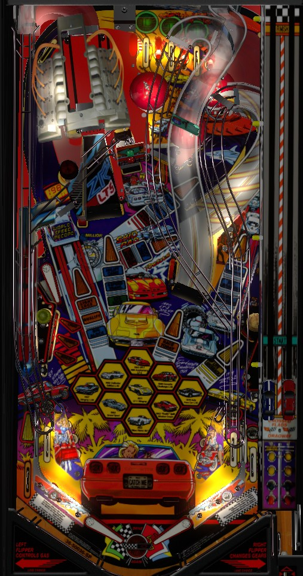

If you're playing strictly for score on an original copy of the game code, perform the Challenge exploit. Shoot the lit blue shot to earn a car part; then shoot the center Pit hole to start a Challenge; then, after a few seconds, the Pit will be lit red; shoot it again, and do not flip the flippers when the DMD prompts you to. Done correctly, a bug in the game will quietly award you 255,000,000 points alongside the value of the Challenge.
In any other case: focus on collecting Cars or playing multiball. Cars are earned by completing Challenges (flashing blue shot -> Pit scoop -> enough flashing shots to win the race), as Route 66 awards (shoot the right ramp a whole bunch), or by locking balls for the first LT-5 Multiball. To play LT-5 Multiball, shoot the left orbit to light locks and the Engine to score them; lock 3 balls for multiball, where jackpots are at the upper loop and side ramp.
Corvette has two flavors of skill shot: a top lanes skill shot and a super skill shot. To activate the super skill shot, press Left-Right-Left-Left on the flippers before plunging. If you change your mind want to deactivate the super skill shot, press Right-Left-Right-Right on the flippers.
To score the top lanes skill shot, simply plunge the ball into the flashing top lane. Flipper lane change can be used to move which lane is flashing. The top lanes skill shot scores 5,000,000 points the first time it is made, increasing by 5,000,000 each time up to a limit of 100,000,000 in one game.
If the super skill shot is active, the one-way gate on the left side of the top lanes will not be active, and the ball will roll to the upper left flipper. Use the upper flipper to shoot the upper loop or side ramp to score a super skill shot, which scores 10,000,000 points the first time and increases by 5,000,000 each subsequent time.
Skill shots are available on extra balls or after locking a ball for LT-5 Multiball. Always go for the top lanes skill shot, as it is considerably easier than the super skill shot and only worth 5,000,000 fewer points.
When the Pit scoop in the center has a green light above it, Corvette Challenge is ready. Corvette Challenge is lit for free at the start of the game. To light Corvette Challenge, make whichever shot in the game has a flashing blue car part to collect that part and qualify the Challenge. If there is no flashing blue car part, which happens after a failed Challenge, simply shooting any major shot will relight Corvette Challenge at the Pit.
During Corvette Challenge, the goal is to make enough shots anywhere in the game to win the race. In the race, you control the blue car toy on the left in the strip above the shooter lane, and you are racing the red car on the right. Your car moves up on its own somewhat slowly; to move more quickly, shoot any major shot, or the spinner, or rapidly press the flipper buttons. Shots that correspond to collected car parts, as well as the spinner if Turbo Boost has been started by completing the lower left standup targets, provide additional progress. If your blue car wins the race, you score a minimum of 50,000,000 points- the exact total depends on how quickly you finished, and the maximum I've seen is 122,000,000- and you also earn one of the nine Cars shown near the flippers for progress toward Puzzle Challenge wizard mode. If you lose the race, you score up to 49,000,000 points depending on how far along the track you were when the red car finished.
Scoring exploit: after about 6 seconds have passed during a Corvette Challenge, the Pit scoop will be lit for Pit-In. During Pit-In, you are prompted to press the flippers repeatedly as fast as possible to complete a Pit Stop, which helps speed up your car in the Challenge. However, if you do not press a single flipper button and let the Pit-In time out, the game will quietly award 255,000,000 points before kicking the ball out. This is almost certainly a bug, as there is no callout or visual indication that you found an easter egg or that this was a planned feature. Timing out Pit-In in this way means you will almost certainly lose the race, but the glitch 255,000,000 award is far more lucrative than the completion bonus or wizard mode progress that would be earned from a completed Challenge. If this feature is present on a game played in a tournament, consider making it your core strategy.
You cannot earn another car part until you win the challenge associated with the previous one. Car parts can also be spotted by shooting the Pit itself when another shot around the playfield is flashing. Car parts always need to be earned in the same order:
This sequence resets after Puzzle Challenge wizard mode is played, and there are other ways to earn Cars toward Puzzle Challenge, so it's unlikely that you'll see this full sequence in any game.
Every 2nd shot to the right ramp gives a Route 66 award. (Route 66 awards can only actually be given in single ball play, so in multiball, you can qualify an award but not collect it.) Awards are always given in the same order every game, and collecting all 13 brings you back to the beginning of the sequence.
After 13 awards, the sequence resets. On the second and further laps through the awards, Special is skipped.
LT-5 is the game's main multiball, named after the engine ramp on the left that starts it. Lock 3 balls to stat multiball. To light locks, shoot the left orbit. For the first multiball, one orbit shot lights all three locks, and locking each ball also awards a car toward Puzzle Challenge wizard mode. For the second multiball, each lock needs to be lit individually, and cars are no longer awarded for making locks. For the third multiball onwards, each lock must be lit individually, and only stays lit for about 15 seconds once the left orbit is made. After making the third lock, Rev Mode begins: in this mini-mode, press the flippers as rapidly as possible to make the ball rattle around the Engine. The more time passes before the ball falls into the proper lock saucer, the more points you score. The mode also ends on its own after about 8 seconds. Rev Mode is usually good for about 15,000,000 points, though scores of up to 46,000,000 (or more?) are possible.
Starting Multiball lights the left out lane kickback if it is not lit. In multiball, jackpots are located at the upper loop and side ramp. The upper loop scores a Horsepower Jackpot which starts at 50,000,000 points. The side ramp scores a Torque Jackpot which starts at 30,000,000 points. Making a jackpot unlights it. Collecting both jackpots causes both of them to relight with their values increased by 20,000,000 each. Jackpots max out at 100,000,000 points. Jackpots can be increased by shooting the unlit engine ramp during Catch Me Multiball or during LT-5 Multiball itself. A commonly cited rule in LT-5 Multiball is that a super jackpot is available for making an upper loop -> side ramp combo. There is no separate callout or animation for this, but it can be observed that sometimes when multiple jackpots are made in very quick succession, the second one is doubled. More research is required to determine when or why this happens. Regardless, always make shooting for lit jackpots be your top priority in multiball- using the left out lane kickback or shooting the engine ramp are good ways to get a ball to the upper flipper at controlled speed.
If multiball ends before any jackpots are scored, you have 10 seconds to restart multiball as a 2-ball round by shooting the engine ramp. This appears to be possible in any LT-5 Multiball, not just the first one.
During non-mode/multiball play, most major shots will be lit with an orange arrow. Making any shot lit in this way scores a Spark Plug. Spark Plug awards are given after every 8 Spark Plugs, and they alternate between a Spark Plug Award (20,000,000 points) or lighting Race Today at the right ramp.
Race Today is a video mode that can be started at the right ramp during single-ball, non-mode play when Race Today is lit. The mode is set up like a drag race. Hold the left flipper to press the gas pedal, and press the right flipper whenever the displays says SHIFT! to shift gears. If you do so with quick enough reactions, you will earn points and one Car, plus starting Drag Race quick multiball, a 2-ball multiball where any ramp (engine, side ramp, or right ramp) scores 15,000,000 points for as long as there are two balls in play. The score earned for completing a drag race is a minimum of 30,000,000, with bonuses for how much you win by and how many times you have completed the drag race. If you shift gears too early or too late, the mode ends with a 5,000,000 point consolation prize. The right edge of the DMD and the cars above the shooter lane depict the status of the drag race. The timing required for a successful Race Today gets significantly more strict after Puzzle Challenge wizard mode has been played once.
A certain number of Spark Plugs can also light an extra ball, which can be moved between the two in lanes or right out lane using the flippers. The exact number required varies based on game settings and the frequency at which the game gives out extra balls- I've seen it be as low as 7 Spark Plugs for extra ball, and it's not always a multiple of 8 like the other Spark Plug awards. There is a maximum of 99 Spark Plugs; the game will tell you the next award is lit at 104 (which visually glitches the display due to having too many characters), but the number you have will never increase past 99.
The nine cars shown in hexagons on the playfield are the main progression in the game. Cars can be earned by completing Corvette Challenges, winning Race Today drag races, locking balls for the first LT-5 Multiball, or as the second Route 66 award. Collecting all 9 cars starts Puzzle Challenge, the game's wizard mode.
Puzzle Challenge starts by requiring you to make 8 shots to any lit orange arrow around the playfield to reveal pieces of the puzzle on the DMD. Of these first 8 shots, at least 2 must be made to the engine ramp to lock balls. After the 8 shots have been made, make a 9th shot to either the engine ramp, Pit scoop, or right ramp to complete the puzzle and lock a third ball. This counts as collecting the 10th and final car, and start Puzzle Multiball. If you drain during Puzzle Challenge but before starting Puzzle Multiball, your progress will be preserved for your next ball in play (unless, of course, you game over during Puzzle Challenge).
Puzzle Multiball is a rather underwhelming wizard mode. Quadra Jets are turned on, increasing the pop bumper value to 1,000,000 points. A fourth ball is sent to the shooter lane to be plunged, after which the three locked balls are kicked out. The only thing to do in this multiball is to shoot the engine ramp, which scores 25,000,000 points times the number of balls in play. There is no quick restart if Puzzle Multiball ends quickly; as soon as single ball play resumes, all car progress is reset, and you must re-earn 9 more cars to try again.
Make an unlit top lane to light it. Flipper lane change can be used to rotate the lit lanes in either direction. Completions of the top lanes advances the bonus multiplier in the sequence 2x-4x-6x-8x. Advancing the bonus multiplier to 8x lights one of the in lanes or right out lane for an extra ball that can be moved with the flippers. The top lanes completion after 8x scores 10,000,000 points; further completions score 5,000,000 more each, up to a maximum of 50,000,000.
Track combos are a variety of 2- and 3-way combos that are each assigned a famous racetrack. Making a combo collects that racetrack. Each combo is awarded its own value; 2-way combos are worth 6,000,000-12,000,000 points each, while 3-way combos are worth 20,000,000-24,000,000 points each. When you collect a racetrack, you not only earn that combo's value, but you also re-collect the value of all other racetracks you have collected during the current ball in play. Each racetrack collected over the course of the game also scores 4,000,000 points in base end of ball bonus at the end of every ball. Known combos include:
The Raucous target faces directly left and can only be shot via a ricochet or the upper left flipper. Several Track combos end at this target. Shooting the right orbit, upper loop, or engine ramp immediately followed by the Raucous target awards 5,000,000 points and one Raucous letter (you are only informed of this if you make the right orbit -> Raucous target combo specifically). At the end of the ball, you receive 7,000,000 points times bonus multiplier for each time you completed Raucous on that ball. This is not worth pursuing in any capacity.
The lower left standup targets read Lite Turbo Boost, and flash. Hit a flashing target to light it solidly; you will then have 15 seconds to hit the other two targets in the bank to start Turbo Boost. Turbo Boost lasts for 15 seconds. During Turbo Boost, the center spinner scores 503,570 points per spin as well as twice as much progress during Corvette Challenge. While Turbo Boost is running, a small speedometer icon will appear in the lower right of the DMD indicating the time remaining. If you drain the ball while Turbo Boost is running, you receive up to 5,000,000 points times bonus multiplier in base bonus; the more time you have left, the more bonus is added. Turbo Boost time is carried over from ball to ball.
The game keeps track of consecutive shots to the left orbit and upper loop. Surpassing the machine record for most consecutive left orbit or upper loop shots without missing will score a Special and allow you to enter your initials as the World Speed Record holder or Cornering Record holder respectively at the end of the game.
Corvette has a conventional in/out lane setup. There is a kickback in the left out lane that starts lit, unlights when used, and is relit by the lower right standup target or by starting LT-5 Multiball. The kickback feeds the ball to the upper left flipper at a very controlled speed. The left in lane, right in lane, and left out lane can all be lit for Extra Ball; if one of them is lit, flipper lane change can be used to rotate which lane is lit.
The right in lane briefly lights Qualify. Shooting the left orbit immediately after making the right in lane scores the Qualify. The first Qualify on a ball scores 15,000,000 points; subsequent Qualifys each score 5,000,000 more than the previous, up to a maximum of 40,000,000.
Bonus is calculated as:
After this calculation including the bonus multiplier, 10,000,000 points per collected Car is also added to the bonus (not multiplied by bonus X); more than 10 Cars can be added to bonus this way, if Puzzle Challenge has been played and one or more Cars have been earned in a second trip through the game's progression.
There is no mid ball bonus collect. Bonus multipliers can never be held from ball to ball. If you have scored a lot of Cars or earned 8x bonus multiplier, bonus can be very significant.
The game manual indicates that Specials can be set to score 30,000,000 points. This value seems rather low, and other Bally/Williams manuals from this era list incorrect point values for this setting; I have not confirmed if the 30,000,000 is correct. Extra balls cannot be set to have a point value.
The starting value for the Spark Plugs extra ball award can be set to anywhere from 2 to 10 Spark Plugs. Default is 4. Regardless of this setting, the number of Spark Plugs required for extra ball will auto-adjust based on how frequently the game ends up giving out extra balls.
The Super Skill Shot can be disabled.
By default, simply pressing the flippers makes progress during Corvette Challenge. This can be disabled.
Locks for LT-5 Multiball, Race Today, Catch Me, and Corvette Challenge each have their own independent difficult settings. This guide describes the factory default of Medium in all cases. Further research is required to explore additional details of easier and harder difficulties.